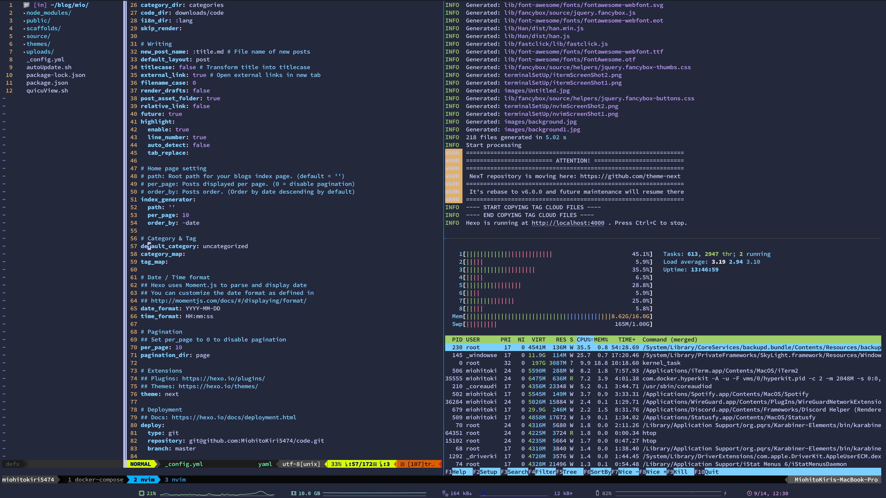
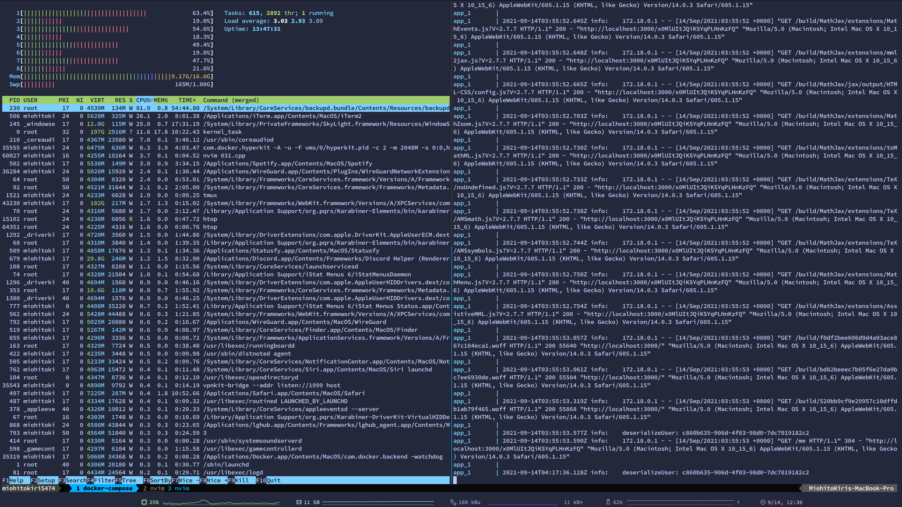
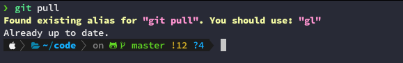
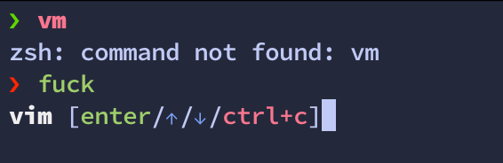
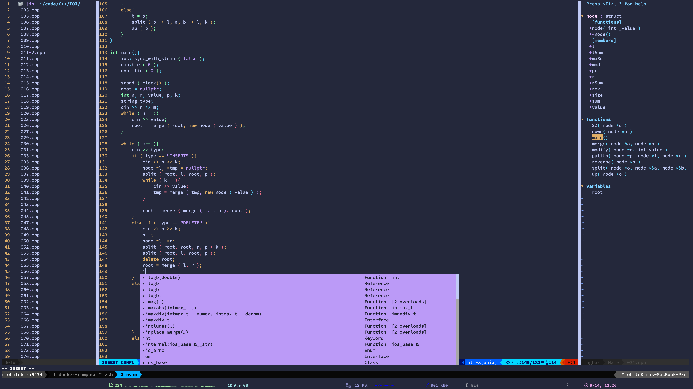
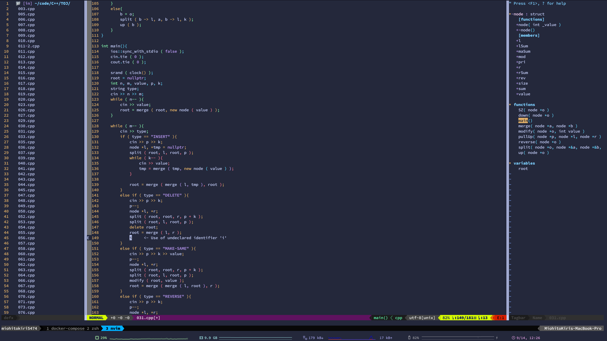

前言
最近開始重寫自己的一些 config，像是 vim 是 多年前跟學長 clone 過來的，zsh 是網路上模板亂抓，tmux 也是找 .tmux.conf.local 下來用
因為總是會戳到不明錯誤，總是會造成不少麻煩，加上最近想要漸漸脫離 Sublime Text，所以在經過幾天的 vimrc 改造後決定要寫篇文章紀錄一下
開始之前
首先應該要有以下先備知識
- Command Line 使用經驗
- homebrew 安裝
有以下經驗更佳
- vim 操作方法


iTerm 2 + zsh
iTerm 2
因為接下來的工作環境都要在 Command line 下面完成，macOS 預設的 terminal app 設定修改麻煩，介面也沒有 iTerm 2 好看，所以我通常是使用 iTerm 2
安裝很簡單，打開 terminal 丟一行指令就好了
1 | brew cask install iterm |
或是上 iTerm2 的官網下載
再來是字體，因為等等要安裝的 zsh 有非 ASC-II 字元，所以需要安裝額外的字體
我這邊是使用 SauceCodePro Nerd Font
如果不需要用一些花俏的 Theme，可以選擇一個順眼的等寬字體，通常好的字體有以下條件
- 字元等寬
沒有對齊的程式碼看起來豆頁很疼 - l, 1, i 要能夠清楚分辨
寫 code 時遇到這種智障事情絕對會降低效率
這些字體通常很好找，這邊大力推薦 Ubuntu-Mono
Ubuntu-Mono也有提供 nerd font，但是支援度還是沒有SauceCodePro來的好，因此使用過一陣子後還是換回去SauceCodePro
最後是調色，iTerm 2 的好處在這邊出現了，iTerm 2 可以匯入/匯出調色，所以可以把現在在用的顏色保存起來，未來換機器方便；或是上網抓別人調好的
像是我現在用的是 Dracula，除了 iTerm 2/vim 以外也有別的 IDE 可以使用，例如 Sublime Text 或 Visual Studio Code Ｏ你 Electron 都能使用
在 Preferences > Profiles > Colors 的右下角，匯入檔案後選擇 Dracula
zsh
設定完外觀，是時候來設定 zsh 了
雖然從 2019 年開始 macOS 已經把預設 shell 改成 zsh 了，不過我還是習慣敲一下這兩行指令，把 zsh 改成預設 shell
1 | sudo sh -c "echo $(which zsh) >> /etc/shells" |
接著是 zsh 的 theme
因為原始的 zsh 太難搞，所以這邊先下載一個 framework：oh-my-zsh
1 | sh -c "$(curl -fsSL https://raw.githubusercontent.com/robbyrussell/oh-my-zsh/master/tools/install.sh)" |
裝完 oh-my-zsh 後，接著就會看到換 theme 了
預設是用 robbyrussell，多了 git status，好多了
以前的 theme 是使用 powerlever9k（沒錯，七龍珠的哏），後來作者有推新版本 powerlever10k
基本上跟 10k 的風格一樣，不過有些更進階的功能，例如可以把已經完成的指令前後綴拿掉，只保留最新那一行的前後綴，比較容易專注在目前的指令上
以及有完整的簡易設定流程，有一些通用的設定（前綴狀態列要不要顯示 icon、狀態之間要用什麼符號連接，之類的）會在第一次開啟的時候執行
再來一些套件的設定就按照個人的需求，這邊我安裝了以下幾樣：
稍微簡介一下
you-should-use
有時候會忘記自己曾經 alias 了一些東西，當時設定就是為了想少打字方便些（例如把 git push alias 成 gp），結果最後還是會忘記用，每天浪費不少時間在敲指令上you-should-use 就會在使用已經 alias 過的指令時跳出提醒，告訴你已經 alias 過了，下次可以改用 alias 過的指令

zsh-syntax-highlighting
寫 code 的時候習慣有 highlighting，敲指令的時候沒有好不習慣
當時抱持著這種心情裝 zsh-syntax-highlighting，後來才發現在使用存在的指令時顯示綠色，不存在的指令顯示紅色、對於可用的檔案位置會畫底線等好處
thefuck
這大概是我見過最人性的套件了
敲指令敲多了偶爾會手指打結，少敲了點東西，像是
apt-get少一個-變成aptget- 敲
python時手指太粗敲成puthon - 跑
pacman時忘記開sudo
這些惱人的問題總是會在工作到一半時突然出現，總是會很想罵句 What the f***
於是有人開發出這個套件，出包的時候敲個 fuck，會從上一次敲的指令中，找出符合的指令（如果有多個選項則會顯示最相關的），多敲個 <Enter> 就執行

apt-get permission denied? fuckputhon main.py zsh: command not found? fuck
no girl friend? fuck
neoVim
基本的環境建置完了，接著換處理編輯器
以前我都是會用 IDE 來寫 code，通常我是用 Sublime Text 3
不過在去年換筆電時，因為某些原因短暫的用過 Arch 當作主系統
還有各種麻煩的套件設定（當時期末一堆事情，沒辦法花太多時間搞這個）
變成長時間用 vim 來寫 code，習慣了之後手指離不開 hjkl（vim 重度使用者的毛病）
加上 Sublime Text 當時的社群幾乎死了，許多套件沒有在維護，而且新套件非常少
以上種種原因讓我拿到新筆電後，便完全捨棄 Sublime Text 了
兩個編輯器的轉換我幾乎沒有什麼障礙，主要也是我一直以來都只把 Sublime Text 當作編輯器
要編譯等麻煩的工作還是會切到 Terminal
因此相較於 GUI 的環境，我還比較適合使用 CLI 的編輯器
這也是讓我決定跳到 vim 的理由之一
neoVim? vim? vi?
對於初學的人來說可能會有點混淆，三個名字長這麼像的東西有什麼差別？
的確都是純文字編輯器，基本操作也相同，不過還是有細微上的差異
最早的編輯器是 vi，操作可以沿用至 vim 跟 neoVim，不過對於方向鍵以及 plugin 的支援度沒有另外兩者高
而 vim 以及 neoVim 是孿生兄弟，兩者的主要差異因為對於多工（job）的呼叫函數不同，因此部分插件無法通用，其餘的操作部分兩者差異不大
至於為什麼已經有 vim 了還會有 neoVim 呢？
這是一個很長的故事，這邊簡單帶一下，詳細的文章可以來看這篇文章 Vim 和 Neovim 的前世今生
vim 是Bram Moolenaar 於相當早期的專案，發表時 git 還要十多年才被 Linus 開發出來
因此其他開發者想要為 vim 貢獻 code 只能依靠寄 email 給 Bram，相較於其他現在的主要大型專案都依賴 git 的 pull request，算是很落後的方式
即便現在已經將 vim 放到 github 上託管，vim 的貢獻依然要將 code 寄給 Bram，再由 Bram push 上 github
而當時 neoVim 開發時，vim 還沒新增多工功能
也就是說在 vim build project 或是 vim-plug update 會讓 vim 整個卡死
而 neoVim 的發起人 tarruda 曾經寄一個 patch 給 Bram，該 patch 正是幫 vim 新增多工功能，但是不知道為什麼 Bram 始終沒有接受
因此 tarruda 將當時的 vim fork 出來，改成以現在主流的開源開發方式，並且將 vim 背後雜亂的 code 清理並重構，並且新增了許多功能（像是多工，或是預設一些對使用者方便的 config）
也因此逼 vim 需要跟上 neoVim 的步伐，許多功能都是在 neoVim 上先實作出來，vim 才跟上腳步加入的
至於 vim 以及 neoVim 因為對於多工的實踐不同，有些套件也無法通用
除此之外，vim 以及 neoVim 的設定檔位置也不同，vim 為根目錄的 .vimrc、套件檔則是放在 .vim 裡，而 neoVim 是和其他套件的設定檔一起放在 .config/ 中、設定檔則是在 .config/nvim/init.vim
Plug-in Manager
用各種編輯器肯定不會完全符合自己的需求（除非是自己開發的）
因此會用各種插件來輔助自己的工作應該也是很合理的
一個一個插件自己安裝相當麻煩，同時還要注意各個插件有沒有更新
因此會安裝一個 Plugin Manager 來輔助我們同步以及安裝插件
目前主流常見的有這幾個，選自己喜歡的一個來用就好
Pathogen
與其說是 plugin manager，不如說只是個 run-time loader
把要用的 plugin 自己丟進 bundle 底下就完工了
刪除也很簡單，把 bundle 底下的資料夾刪掉就好
Vundle
Vundle 在 github 上的星星應該是這三者最多的
使用起來相當簡單，在 .vimrc 裡面打上 plugin 的名稱
1 | Plugin 'vim-scripts/taglist.vim' |
然後執行 :PluginInstall，就會幫你安裝
這樣換新環境只要把 .vimrc 放到根目錄，跑一次 :PluginInstall 就好了
vim-Plug
個人覺得功能最強大的 plugin manager，也是我正在使用的
使用方法跟 Vundle 差不多，一樣是在 .vimrc 裡面加上要用的 plugin 名稱
1 | Plug 'vim-scripts/taglist.vim' |
不過用的關鍵字不同，指令也不一樣，要安裝更新要用 :PlugInstall
但是與 Vundle 不同的是，他有 on-demand loading
像是 vim-go 這種只有在寫 Golang 時才會用到的插件，就可以設定只有在開啟 .go 時的檔案才會 load
Nerd tree 也是，在平常不需要使用時便不會啟動，可以設定成啟動時才載入
在安裝許多 plugin 時可以加快開啟速度
Plugins
裝完 plugin manager 之後就可以開始裝 plugin 了，這邊列出我有在用的 plugin
Plugin Manager
airline
fzf
tag
git-support
auto completion & lsp
something else
Nerd tree
Golang support
Goyo
Color Theme
現在的截圖


大多數 plugin 沒有做過多的設定，即便有設定也只有做最基礎的
詳細的可以到我的 github 看 init.vim
而 LSP 以及 defx 的部分可以看 amikai 大大寫的文章 Golang 開發環境 - 使用 neovim
雖然個人比較推薦 defx，不過 defx 需要大量的手動設定，有些人可能經不起中間的踩雷過程
想要避免這部分麻煩的建議使用 NERDTree 就好，比較老牌、討論的人也多，而且大多數情況下也夠用
結語
感謝看到這邊的各位，這是一篇難產很久的文章
從去年九月一路拖到現在，中間各種事情（像是躺在床上發懶）導致這篇文章拖到現在才寫出來
最近想要把這邊改成一些寫 code 或打比賽的心得，像是過往那種題解會開始減少
一來是最近題目越來越寫不動，而且回頭看當時一些文章會開始有一些「當初怎麼會寫這些」的想法
找不太到寫題解的感覺了，不如就先暫時放著吧
另外截圖中底部那一條狀態列是 iterm 內建的，再往上那一條是 tmux，因為沒有設定太多東西，我需要的功能也不多，因此直接抓別人的來用，想要有好看一點的 tmux 可以直接複製 我的 tmux config